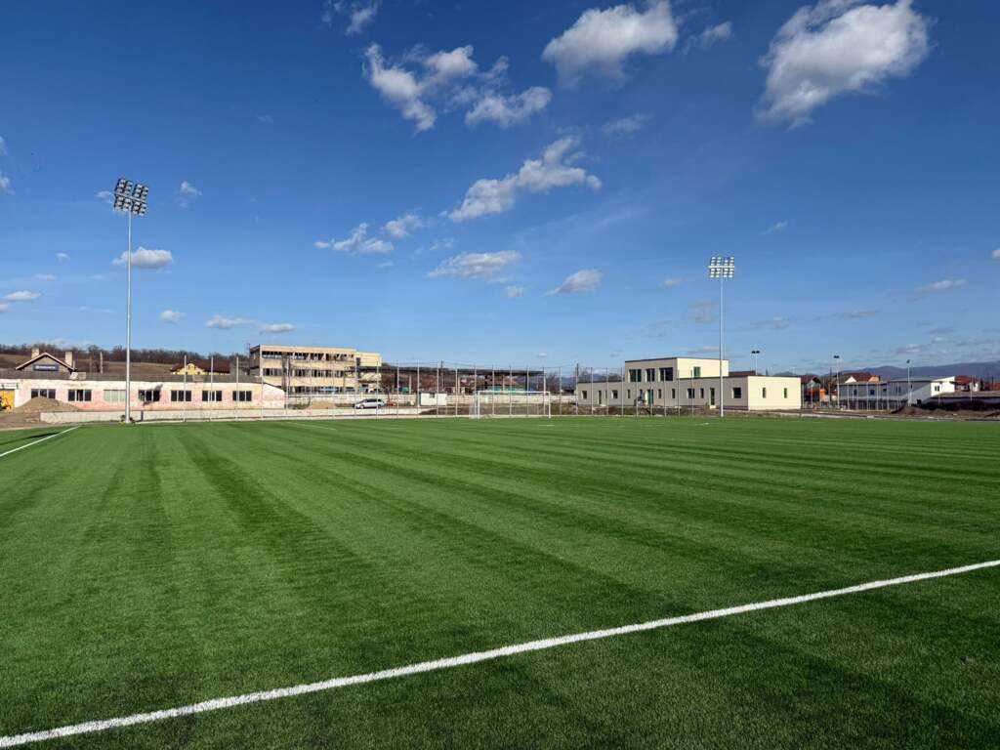

Stadionul Francisc Matei

Stadionul Francisc Matei este un stadion multifuncțional situat în Beiuș, România. Acesta este utilizat în principal pentru meciuri de fotbal și servește drept teren propriu pentru echipa Bihorul Beiuș. În perioada 2022–2025, stadionul a trecut printr-un amplu proces de modernizare, derulat de Compania Națională de Investiții (CNI); suprafața de joc a fost înlocuită cu gazon artificial, a fost instalat un sistem de nocturnă, iar capacitatea a fost mărită de la 400 la 900 de locuri prin adăugarea unei a doua tribune, cu 500 de locuri. De asemenea, a fost construită o clădire nouă pentru vestiare și birouri, suplimentar față de cea existentă.
CS Bihorul Beiuș - Sticla Arieșul Turda |Atinge imaginea pentru a o mări